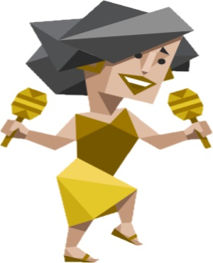

ESFP-A / ESFP-T
자유로운 영혼의 연예인

즉흥적이며 열정과 에너지가 넘치는 연예인형.
갑자기 흥얼거리며 즉흥적으로 춤을 추기 시작하는 누군가가 있다면 이는 연예인형의 사람일 가능성이 큽니다. 이들은 순간의 흥분되는 감정이나 상황에 쉽게 빠져들며, 주위 사람들 역시 그런 느낌을 만끽하기를 원합니다. 다른 이들을 위로하고 용기를 북돋아 주는 데 이들보다 더 많은 시간과 에너지를 소비하는 사람 없을 겁니다.
천생연분 -> ISFJ, ISTJ
궁합최악 -> ENFP, INFP